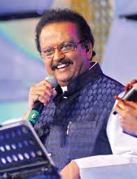

S. P. Balasubrahmanyam - Legendry singer
MELODIOUS VOICE - S. P. Balasubrahmanyam
Sripathi Panditaradhyula Balasubrahmanyam(4 June 1946 – 25 September 2020), shortened as S. P. Balasubrahmanyam or SPB, was an Indian playback singer, television presenter, actor, music composer, dubbing artist, and film producer. He is widely regarded as one of the greatest Indian singers of all time. He predominantly worked in Telugu, Tamil, Kannada, Malayalam, and Hindi films and sang in a total of 16 languages.
S. P. Balasubrahmanyam made a debut as a playback singer on 15 December 1966 with a Telugu film Sri Sri Sri Maryada Ramanna scored by his mentor, S. P. Kodandapani. In career spanning over five decades, he has won six National Film Awards for Best Male Playback Singer for his works in four different languages – Telugu, Tamil, Kannada, and Hindi; 25 Andhra Pradesh state Nandi Awards for his work in Telugu cinema; and numerous other state awards from Karnataka and Tamil Nadu governments. In addition, he won six Filmfare Awards South and a Filmfare Award. According to some sources, he held the Guinness World Record for recording the highest number of songs by a singer with over 50,000 songs in 16 languages. On 8 February 1981, he created a record by recording 27 songs in Kannada from 9 am to 9 pm. In addition, he recorded 19 songs in Tamil, 16 songs in Hindi in a day, which has also been called a record
Throughout his career, Balasubrahmanyam has won awards not only for playback singing, but also for music direction, acting, dubbing and producing.
